Jesse Arthur Culmer cMay 1898 - c1938
[ Home ] | [ Calendar ] | [ Surnames Index ] | [ Errors ] | [ Family History ]The child of Charles Culmer (a coal dealer) and Mary Lawrence, Jesse Culmer, the second cousin twice-removed on the mother's side of Nigel Horne, was born in Faversham, Kent, England c. May 18981,2,3 and baptised there at St Mary of Charity Church, Church Road on 11 May 1898.
During his life, he was living at Cecil Avenue, Strood, Kent, England on 31 Mar 19011 - less than a mile from his brother Albert Thomas who was living at 22 Station Road, Frindsbury, Kent and his brother Valentine Frank, sister Nellie Culmer, brother Charles Culmer, sister Emily Culmer and mother Mary Lawrence who were living at 19 Cecil Avenue in Strood -; at 39 Cross Street in Strood on 2 Apr 19115 - less than a mile from his brother Albert Thomas, brother Valentine Culmer, brother Charles Culmer, sister Emily Culmer and mother Mary Lawrence who were living at 14 Hone Street in Strood; and in Strood in 19154 which is where he died c. Aug 19383. He served in the army from 22 Oct 1915 to 7 Feb 1919 (soldier Number: G/12500, Rank: Private, Corps: Royal West Kent Regiment; and; Regiment: King's Royal Rifle Corps; Service number: 15892).
Parents
- Charles was born c. Nov 1855
- Mary Ann was born on 23 Jan 1853
Citations
- 1901 England, Wales & Scotland Census - Findmypast (was age 3 and the son of the head of the household)
- England & Wales births 1837-2006 - Findmypast
- England & Wales deaths 1837-2007 - Findmypast
- British Army Service Records - Findmypast
- 1911 Census for England & Wales - Findmypast (was age 12 and the son of the head of the household)
Media
Jesse Culmer - WW1 Record 3
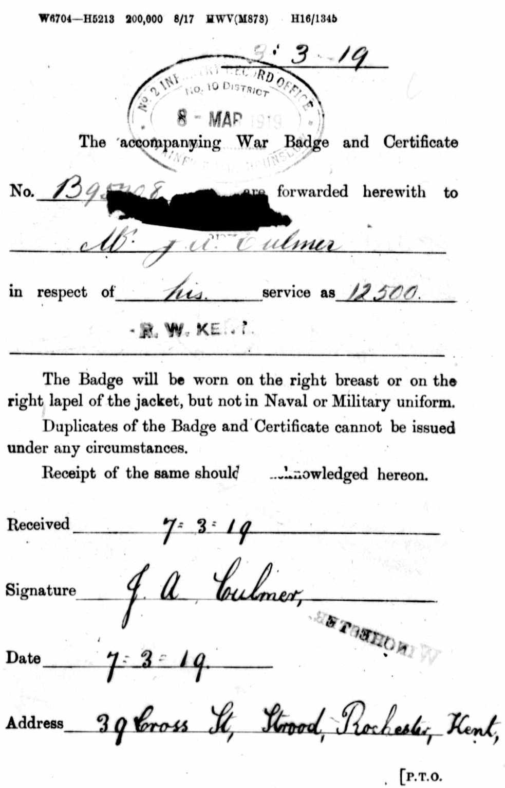
Jesse Culmer - WW1 Record 4
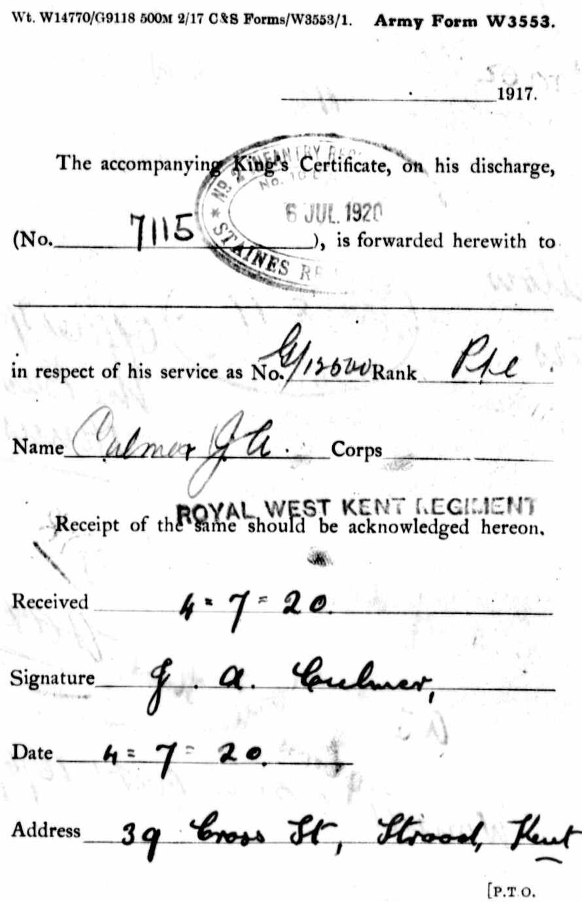
Jesse Culmer - WW1 Record 5
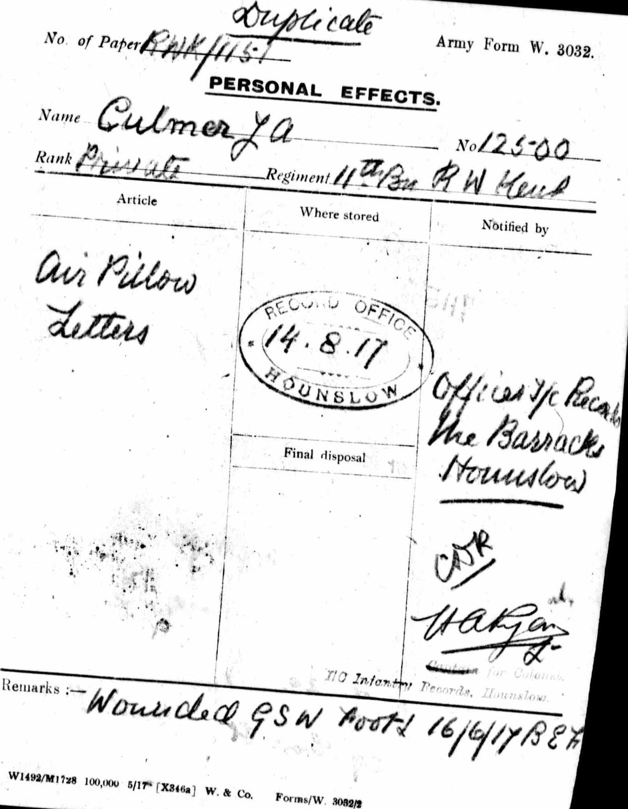
Jesse Culmer - WW1 Record 3
Jesse Culmer - WW1 Record 4
Jesse Culmer - WW1 Record 5
Jesse Culmer - WW1 Record 6
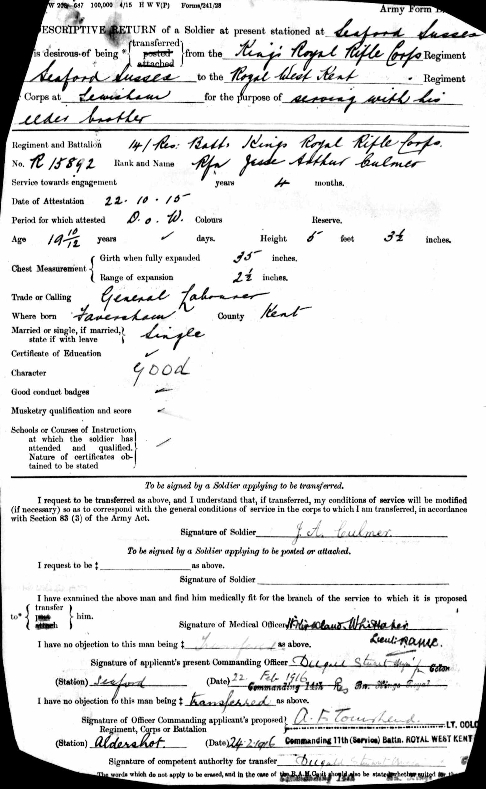
Jesse Culmer - WW1 Record 7
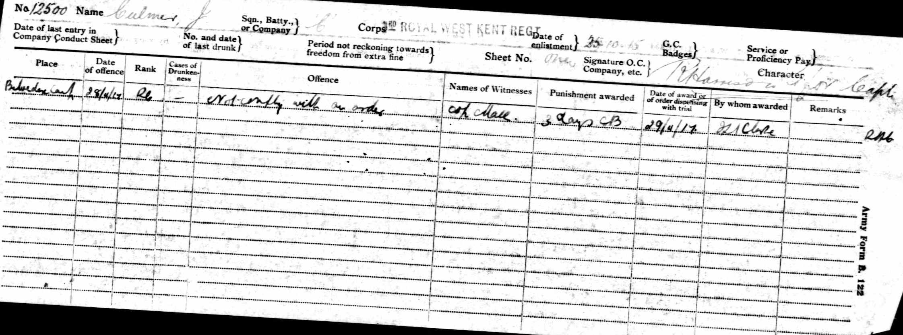
Jesse Culmer - WW1 Record 8
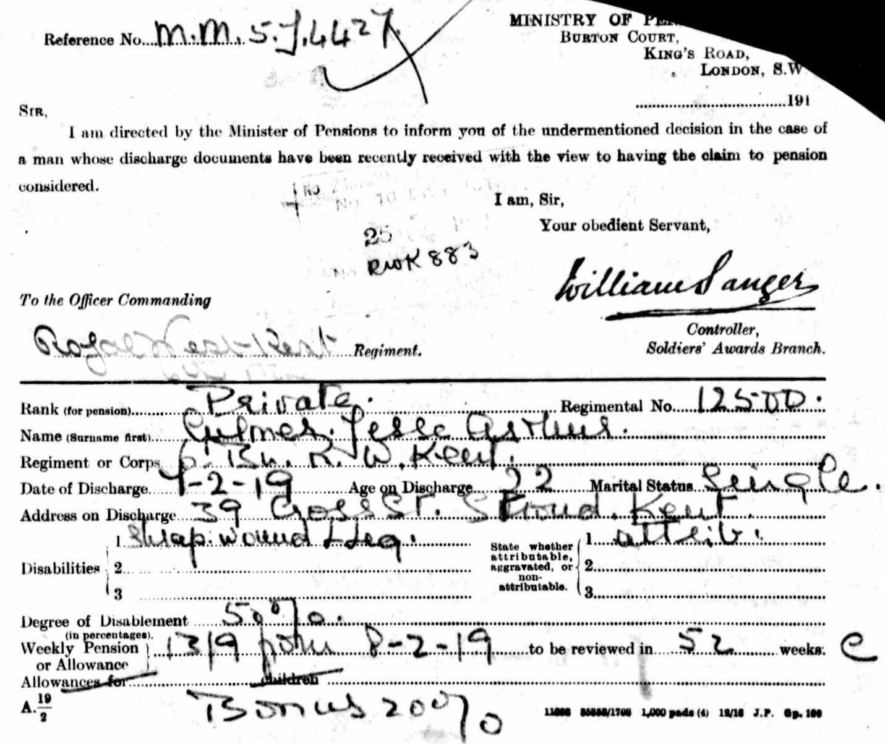
Jesse Culmer - WW1 Record 9
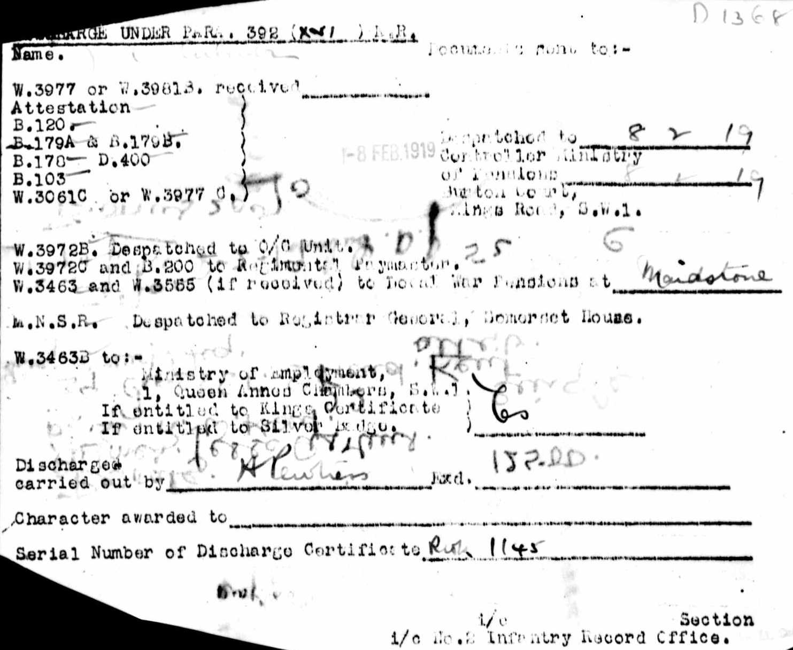
Jesse Culmer - WW1 Record 10
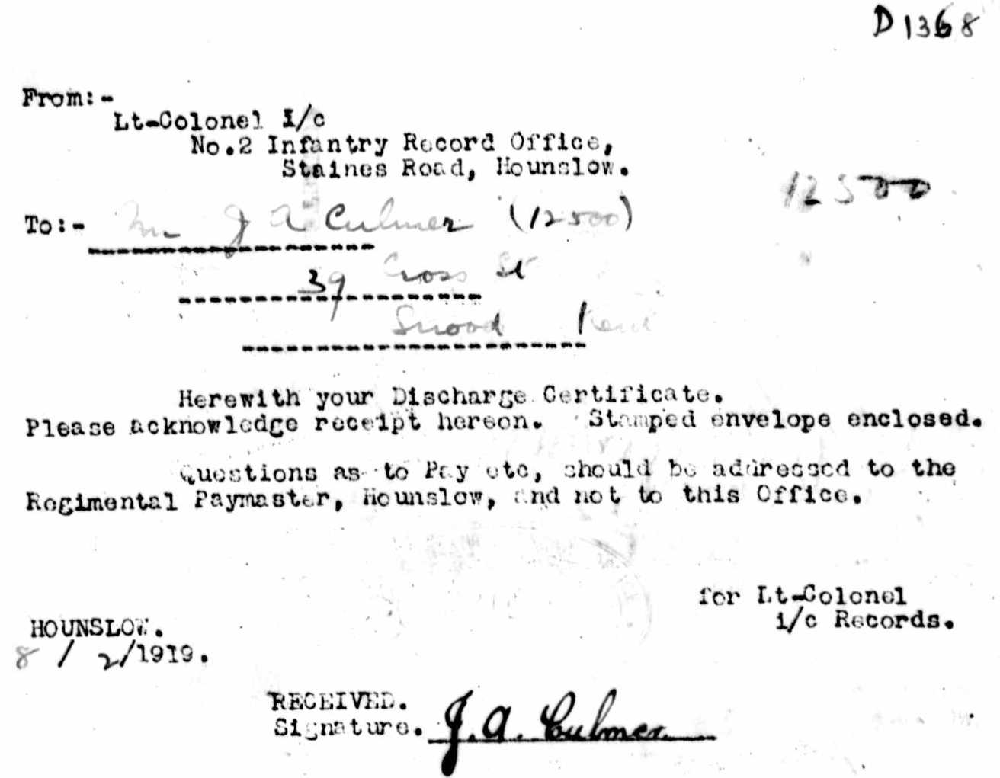
Jesse Culmer - WW1 Record 11
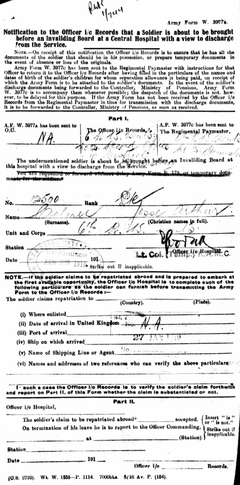
Jesse Culmer - WW1 Record 12
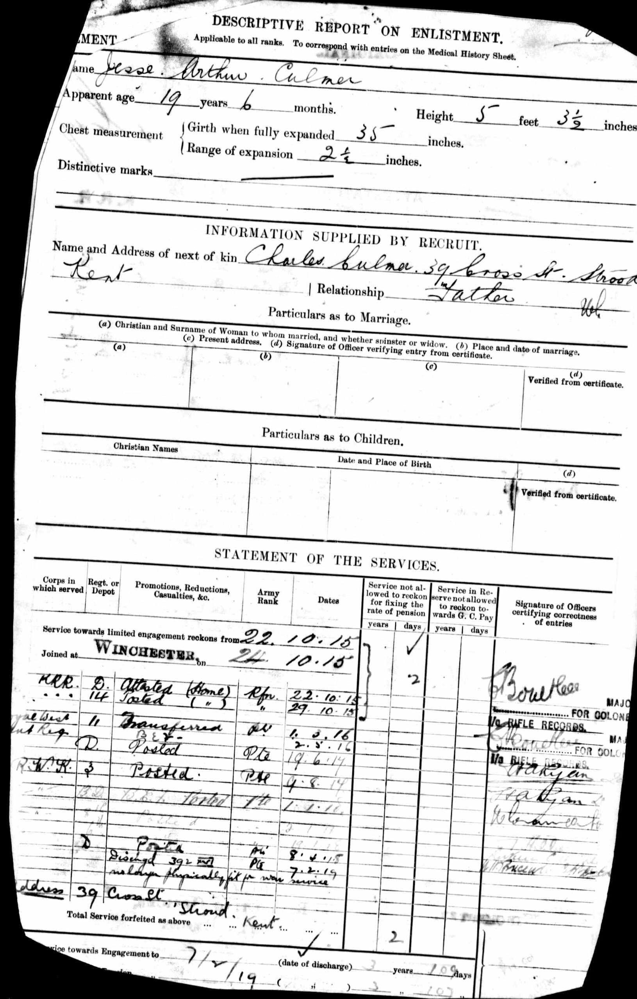
Jesse Culmer - WW1 Record 13
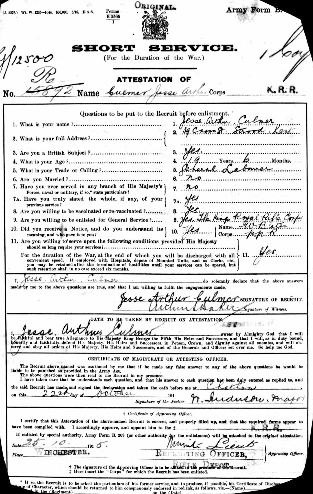
Jesse Culmer - WW1 Record 14
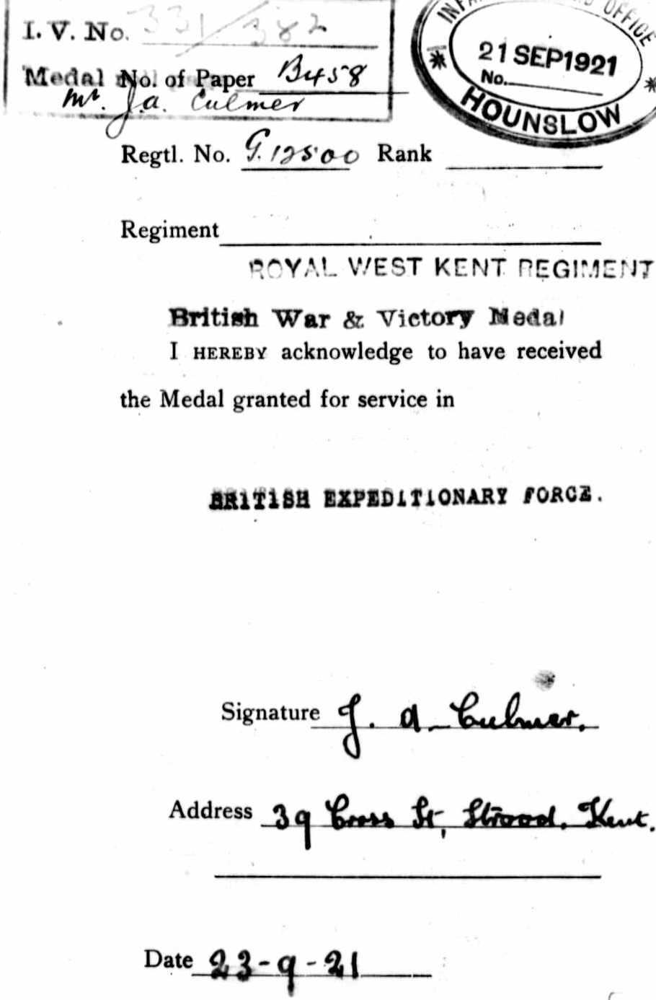
Jesse Culmer - WW1 Record 15
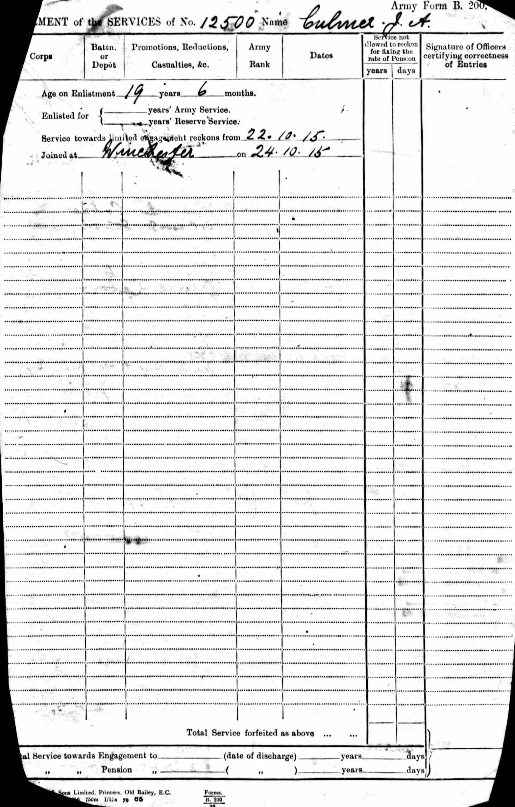
Jesse Culmer - WW1 Record 16
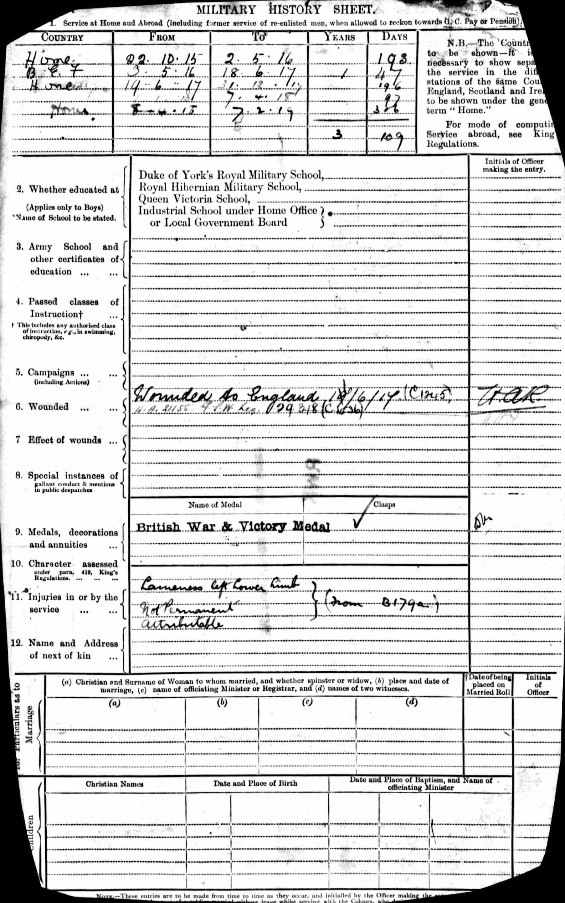
1911 Census for England & Wales - GBC/1911/RG14/03869/0717/6
British Army Service Records - GBM/WO363-4/7305942/27/647
Britain, Campaign, Gallantry & Long Service Medals & Awards - GBM/MCI/1051468
British Army Service Records - GBM/WO363-4/7305942/27/651
England & Wales births 1837-2006 - BMD/B/1898/2/AZ/000140/008
England & Wales deaths 1837-2007 Transcription - BMD-D-1938-3-AZ-000176-097
Kent, Canterbury Archdeaconry Baptisms Transcription - GBPRS-CANT-B-96264352
Silver War Badge Roll 1914-1920 - GBM-SILVERWAR-BADGES-260094
England Births & Baptisms 1538-1975 - R_884228516
Family Tree
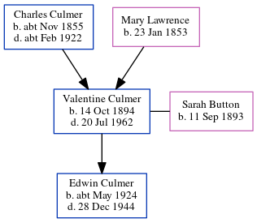Map
Generated by ged2site. Last updated on Jul 3, 2024
Known Issues
Location for 31 Mar 1901 (Cecil Avenue, Strood, Kent, England) differs from mother's (19 Cecil Avenue, Strood, Kent, England)
Location for the event between 22 Oct 1915 and 7 Feb 1919 is empty